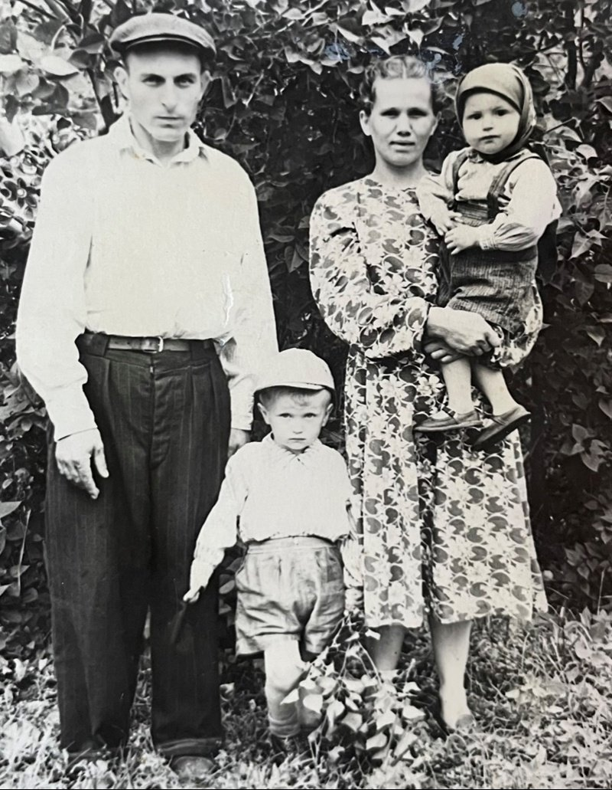
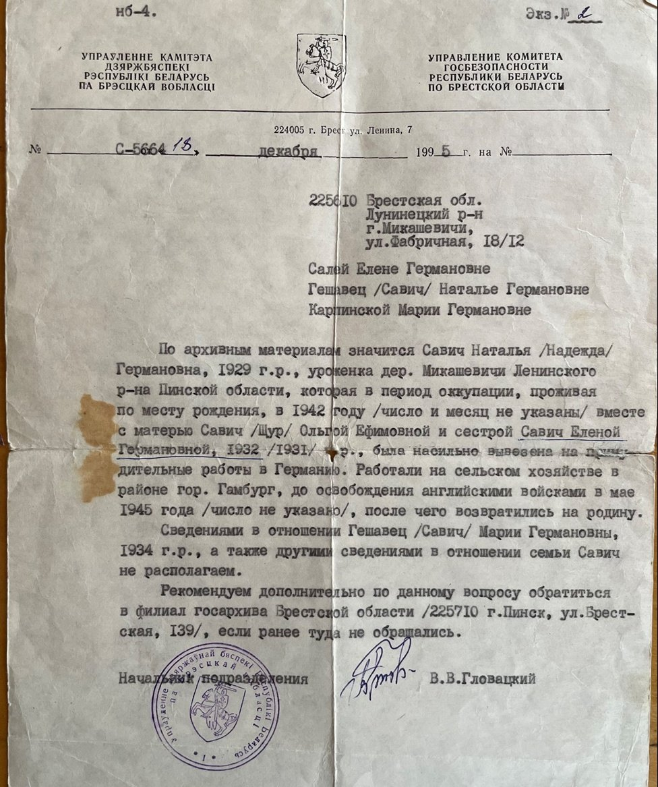

Салей (Гешавец) Елена Германовна
🏡 1. Семья и довоенное детство
Родилась в большой семье Германа и Ольги Гешавец (11 детей, 7 умерли маленькими, выжили 4 дочери: Ольга, Наталья, Елена и Мария). Отец умер в 1934 г. Мать одна тянула хозяйство.
⚡ 2. Начало войны и оккупация родного края
Летом 1941 г. во время сбора черники в лесу девочки услышали разрыв первых бомб у железной дороги. В ноябре 1942 г. после взрыва кинотеатра Конопацким спасались в партизанском отряде, жили в шалаше, варили крапиву. При попытке вернуться были схвачены.
⛓️ 3. Облава, арест и отправка в эшелонах
В 1942 г. погружены в товарный эшелон. В распределителе бауэр хотел забрать только взрослую мать, а дочерей отправить в концлагерь смерти. Мужество матери Ольги Ефимовны спасло детей: она поставила ультиматум и добилась, чтобы детей взяли вместе с ней в поместье под Гамбургом.
🌾 4. Рабский труд, испытания и лагеря Германии
Поселили в холодной кладовой, спали на соломенной перине. Хозяйка кричала на 9-летнюю Лену даже за упавшее яблоко. Младшая Маша собирала яйца птицы, старшие пололи, сеяли и жали. Ходили в деревянных колодках. Лена научилась ездить на велосипеде и развозила записки и поручения хозяина.
🕊️ 5. Освобождение союзными и советскими войсками
В мае 1945 г. семью освободили британские войска. Вернулись на пепелище родных Микашевичей — дом был полностью разрушен.
🌱 6. Возвращение на пепелище и мирный труд
Елена окончила 4 класса и вечернюю школу, работала няней, затем на Лесозаводе. Вышла замуж за Иосифа Салея (1931 г.р.). Вырастили троих сыновей: Леонида (работал на РУПП «Гранит»), Виктора и Владимира. Правнучка Софья Салей бережно сохранила историю прабабушки в музейной исследовательской работе гимназии.
📷 Фотографии и архивные документы (2)
Фото 23 / Фото 1. Иосиф и Елена с сыновьями Виктором и Леонидом, 1957 г.

Фото 24. Архивная справка управления комитета госбезопасности семье Салей, Гешавец, Карпинской (сестрам Елены)